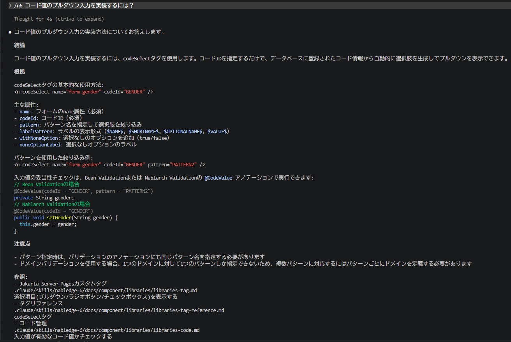
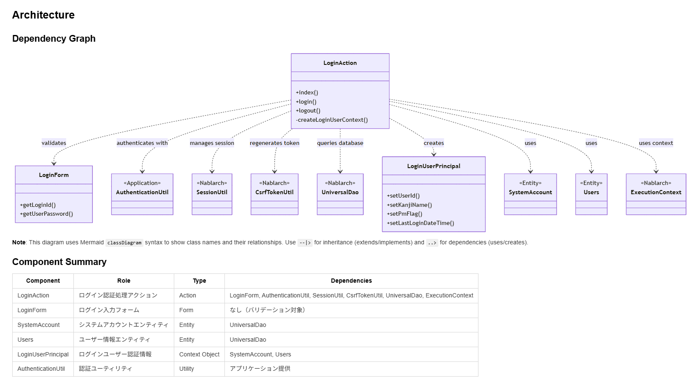
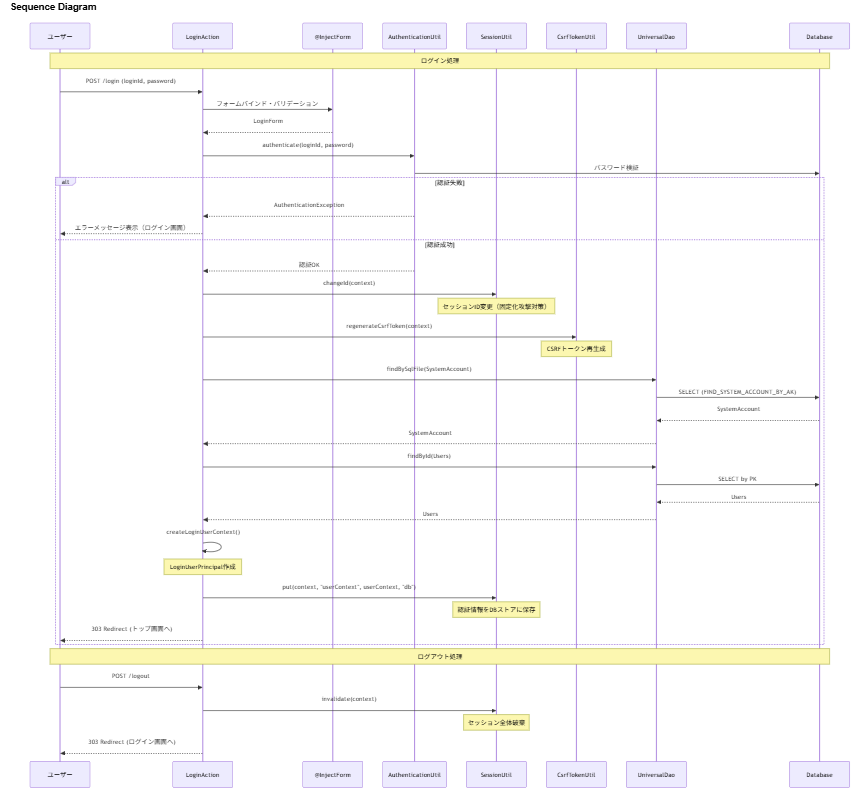

Nablarch専用AIコーディングツール向けプラグイン¶
目次
前提環境¶
本プラグインの利用には、Claude Code(外部サイト) または GitHub Copilot(外部サイト) が必要である。
Nablarch専用AIコーディングツール向けプラグインとは¶
Nablarch専用AIコーディングツール向けプラグインは、Nablarch公式解説書・システム開発ガイド・サンプルプロジェクトの知識を搭載したAIアシスタントである。 Claude Code または GitHub Copilot のプラグインとして動作し、Nablarch固有の仕様・作法を正確に回答する。
背景¶
近年、生成AIが開発現場に急速に浸透し、開発者は日常的にAIを活用している。 しかし、Nablarchの情報はWEB上で複数の情報源に分散しており、横断的な理解が必要である。 そのため、生成AIはNablarch固有の仕様と作法を正確に回答できない。
よくある開発現場での困りごと¶
Nablarch開発でこんな経験はないだろうか？
- 「あの設定、どの解説書に載ってたっけ？」
- 「このAPIの使い方、公式ドキュメントを何ページも行ったり来たり…」
- 「AIに聞いても、存在しないメソッドを提案されて余計に混乱する」
- 「メンバーへのNablarch説明に時間を取られて設計が進まない」
提供する機能¶
知識検索¶
Nablarchのドキュメントに基づいて質問に回答する。
使用例：
/n5 コード値のプルダウン入力を実装するには？
Nablarchのドキュメント全体から関連セクションを検索し、コード例・設定例を含めた回答を返す。
回答例


仕組み：
- Nablarch公式ドキュメントをAIが読めるJSON形式に変換
- キーワード全文検索＋AIによる関連度判定の2段階で精度を確保
- 全文検索でヒットしない場合は目次からAIがファイルを選択するフォールバック経路あり
コード分析¶
プロジェクト内のアプリケーションコードをNablarchの観点から分析し、全体像をドキュメント化する。
使用例：
/n5 code-analysis
以下の情報を可視化：
- クラス間の依存関係
- ハンドラキューの構成
- 処理フロー（Mermaid図）
出力例
クラス依存関係図とコンポーネント概要:


処理フロー図（シーケンス図）:


上記のような図と合わせて、各コンポーネントの役割、Nablarchフレームワーク機能の使い方、実装ポイントなども含めた詳細なドキュメントが生成される。
主な活用シーン：新メンバーがプロジェクトに入ったときの素早い全体把握。
特徴¶
- 公式ドキュメントのみを根拠にした回答
- 知識ファイルは、Nablarch公式ドキュメントをルールベース変換して作成している。 AIがWEB検索や推測で外部情報を持ち込むことはなく、回答の根拠は常に公式情報に限られる。
- わからないことは「わからない」と回答
- 知識ファイルに情報がない質問には、「知識ファイルに含まれていません」と明示する。 もっともらしい推測で誤った回答を返すことがない。
- 回答に必ずセクション単位の参照元を提示
すべての回答に参照元を明示することで、AIの回答が正確かどうかを即座に確認可能である。
- 参照元の提示構成
- 1行目: ページタイトル（例: HTTPエラー制御ハンドラ、など）
- 2行目: ファイルパス（.md知識ファイル）
- 3行目: 引用した各セクションのタイトル
対応バージョン¶
本プラグインは以下のNablarchバージョンに対応している。
| 対応バージョン | プラグイン |
|---|---|
| Nablarch 6u3 | nabledge-6(外部サイト) |
| Nablarch 5u26 | nabledge-5(外部サイト) |
| Nablarch 1.4.11 | nabledge-1.4(外部サイト) |
| Nablarch 1.3.7 | nabledge-1.3(外部サイト) |
| Nablarch 1.2.8 | nabledge-1.2(外部サイト) |
インストール方法¶
本プラグインは GitHub 上で OSS として無償公開している。 ターミナルでコマンド1つ実行することで簡単にインストールできる。
Nablarch 5 の場合¶
以下のコマンドをターミナルで実行する:
curl -sSL https://raw.githubusercontent.com/nablarch/nabledge/main/setup-cc.sh | bash -s -- -v 5
または:
curl -sSL https://raw.githubusercontent.com/nablarch/nabledge/main/setup-ghc.sh | bash -s -- -v 5
これで /n5 コマンドが利用可能になる。
その他のバージョンの場合¶
対応バージョン表の「プラグイン」列のリンクから、該当するバージョンの手順を確認すること。